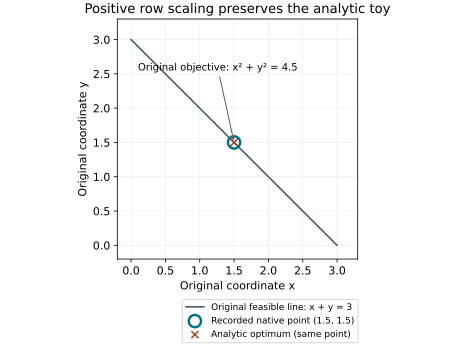

Native C++ · saved numerical diagnostic · source-only evidence
Positive row scaling admits the model; it can still fail numerically
A bounded diagnostic revisited three HiGHS refusals from the 35-model tracking first pass. Multiplying constraint rows by exact positive powers of two preserved their represented equations. Model 23 completed a trivial zero-state case; models 27 and 28 still failed numerically. This is no conditioning, performance, robustness or stability claim.
Download the immutable source-only evidence ZIP · Check or reproduce · Frozen file manifest · Original 35-case first pass
What changes, and what stays the same
For each constraint row, a positive multiplier preserves its feasible half-space:
aᵢᵀz ≥ bᵢ ⇔ dᵢ aᵢᵀz ≥ dᵢ bᵢ, dᵢ = 2kᵢ > 0.
The same equivalence applies to equality and interval rows. The native helper changes only constraint coefficients and their row bounds. It keeps the quadratic objective and variable bounds. It rejects overflow, underflow and any coefficient or finite-bound inverse scaling that changes a binary64 bit. Unbounded optional endpoints remain unbounded.
This profile normalizes only rows with an actual nonzero coefficient at or below 10−12. It chooses kᵢ = max(0, −ilogb(min |aᵢⱼ|)), so their smallest nonzero magnitude lies in [1,2). It is distinct from merely lifting a coefficient above the threshold; large coefficient ratios can remain.
The original logical model/task identities remain references. Each transformed numerical program has the distinct suffix /diagnostic-row-min-power2-v1. The mathematical dual relation is yoriginal = D yscaled. No public dual vector was emitted, so no actual dual remapping or dual certificate is asserted.
A supported 2D sanity case, in original coordinates
Before the model attempts, native C++ solved the exact-dyadic toy:
minimize x² + y², 2−50(x+y) = 3·2−50.
Multiplication by 250 gives x+y=3. The analytic optimum is x=y=1.5, with original objective 4.5. The marked point comes from saved native stdout; the analytic marker is independent.

All three outcomes remain in the record
| Model | Original compiled matrix | Observed outcome | Raw evidence |
|---|---|---|---|
| 23 | 38 rows; 6 offending entries; minimum 6.855804411066206×10⁻¹⁷ | Three replans completed. Zero initial state and zero nominal input yield a trivial zero optimum. This establishes no nonzero-state control or stabilization result. | Rows, stages and exponents · Original/scaled CSR · Full native log · Attempt receipt |
| 27 | 110 rows; 780 offending entries; minimum 2.1740349403908295×10⁻²⁷ | LP feasibility reported optimal, but the adapter rejected its start: start.valid=false and qp_run=false. No completed QP control plan; not a claim of original-problem infeasibility. | Rows, stages and exponents · Original/scaled CSR · Full native log · Attempt receipt |
| 28 | 220 rows; 4,800 offending entries; minimum 9.298585042071114×10⁻³⁷ | Native LP feasibility failed with excessive primal values. No completed QP control plan; not a claim of original-problem infeasibility. | Rows, stages and exponents · Original/scaled CSR · Full native log · Attempt receipt |
The resulting whole-matrix magnitude ranges were approximately [7.93×10−5, 1.80×1016], [1, 6.19×1026] and [1, 1.33×1036], respectively. Large ranges remain; algebraic admission alone cannot establish a numerically usable solve. No further retry is included.
Check the original task, not only a tiny row residual
The three models retain the first pass’s separately authored nominal tracking task: a three-stage horizon at each of three observed-state replans, target zero, input bounds [−1,1] in recorded coordinates, no state bounds, Q diagonal weights 1/max(1,|x₀ᵢ|)², terminal weight 5Q and R=0.02I. These are task choices, not source calibration. Source matrices, coordinates and external-channel roles are unchanged.
For completed model 23, an independent checker replayed all nine full eight-state predicted transitions, initial-state binding, applied first controls, executed next states, original input bounds and original objective. Maximum dynamics residual and objective difference were both zero. Models 27 and 28 have no accepted completed trajectory to replay. The checks do not reinterpret a numerical failure as mathematical infeasibility.
Portable check results · Captured independent checks · Saved native model coefficients · Input provenance
Execution and source boundary
GNU C++ 16.2.1 and CMake 3.31.6 built two small Release consumers against a read-only, 240-file installed snapshot. HiGHS was version 1.11.0, with one requested native thread. All SDK hashes matched before and after; the history compiler header/archive matched their earlier source-bound component qualification. This is a new local consumer, not fresh whole-SDK qualification.
Each attempt used one worker, a 300-second process-group wall timeout, inherited 300-second per-process CPU limit and 8 GiB per-process virtual-address-space limit. These are Linux RLIMIT_AS/CPU scopes, not aggregate RSS or cgroup caps. A policy probe read back the limits and received ENOMEM for a 9 GiB mapping. No timeout occurred; cancellation was configured, not exercised. Post-wait checks found no remaining process groups. No timing comparison or performance winner is reported.
The exact executed C++ helper sources are included. Host paths in receipts and two local Python text projections use named location tokens, with original hashes and the projection mapping retained. Portable checker/reproduction helpers are supporting adaptations, not falsely labelled as the captured executable. No ELF, static library, vendor source or SDK payload is distributed. Binary licensing and distribution remain outside this unit.
Exact source, compiler, SDK and configuration records
- Executed source, binary and compiler hashes; flags and SDK archive references
- All 93 captured-file dispositions and hash mappings
- Original local seal, including omitted binary hashes
- 240 SDK file hashes, without the SDK
- Executed native driver source · Executed native transform source
- Portable independent checker · Optional source-only runner
Captured configuration SHA-256: d44de18799b986054e3b71b6b86ee600c30551a9ca2313c021e976b6be065eec.
Baseline source parent: 5df7f97fbf40eb4858a8dafb7a1e74dd5318c816. The helper’s actual source hashes are separate and bind its uncommitted local spike at execution time.
This diagnostic appends evidence to issue #1012. It preserves all 35 original first-pass cases and their locked ZIP; it neither completes the all-model/formulation matrix nor changes the three canonical comparison task identities.